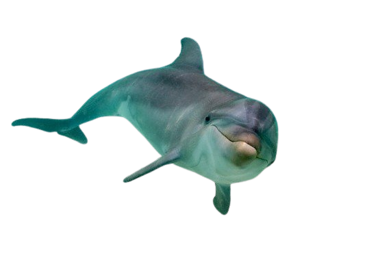
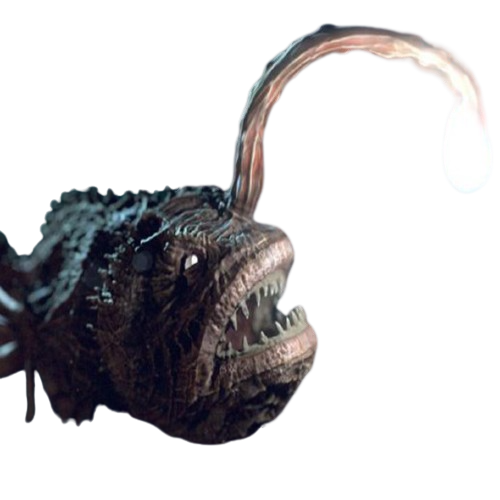
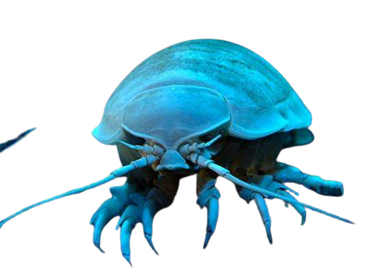
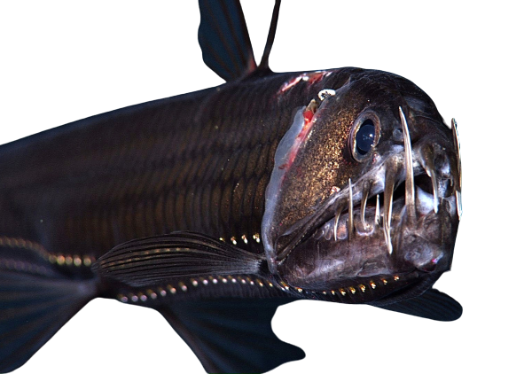
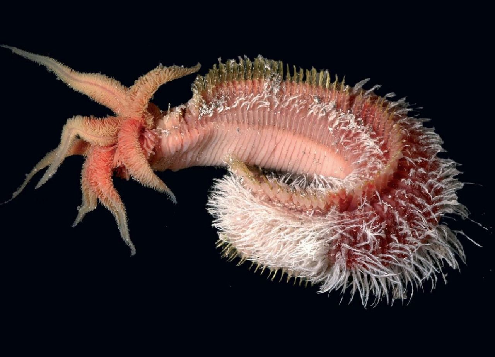

El océano tiene cinco capas según la profundidad, la luz y la temperatura. Cada capa tiene sus propias características y vida marina. Explora las capas del océano con esta página web.
abcdefgh
La zona epipelágica es la capa más superficial del océano, de 0 a 200 metros. Es la zona más iluminada y cálida, donde hay mucha fotosíntesis y diversidad de organismos marinos.
Los delfines son mamíferos marinos que viven en la zona epipelágica. Son animales sociales, inteligentes y comunicativos, que se alimentan de peces, calamares y crustáceos.
La zona mesopelágica es la capa intermedia del océano, de 200 a 1000 metros. Es la zona de penumbra, donde la luz solar es muy débil y la temperatura desciende. En esta zona viven animales adaptados a la oscuridad, la presión y el frío.
Los peces linterna son peces abisales que viven en la zona mesopelágica. Tienen órganos bioluminiscentes que les sirven para atraer a sus presas, comunicarse y camuflarse.
La zona batipelágica es la capa profunda del océano, de 1000 a 4000 metros. Es la zona de oscuridad total, donde no llega ninguna luz solar y la temperatura es muy baja. En esta zona viven animales que dependen de la materia orgánica que cae desde las capas superiores.
El isópodo gigante es un crustáceo que vive en la zona batipelágica. Tiene un caparazón segmentado y puede medir hasta 50 centímetros de longitud. Se alimenta de restos de animales muertos que caen al fondo del océano.
La zona abisopelágica es la capa abisal del océano, de 4000 a 6000 metros. Es la zona más inhóspita y desconocida del océano, donde la presión es muy alta y apenas hay vida. En esta zona se encuentran las fosas oceánicas, que son depresiones del fondo marino.
El pez víbora es un pez abisal que vive en la zona abisopelágica. Tiene una mandíbula enorme con dientes afilados y un órgano bioluminiscente en el extremo de una espina dorsal que usa para atraer a sus presas.
La zona hadopelágica es la capa más profunda del océano, de más de 6000 metros. Es la zona donde se encuentran las fosas oceánicas más profundas, como la fosa de las Marianas, que tiene casi 11000 metros de profundidad. En esta zona hay muy pocos animales, como el pez caracol y el gusano de Pompeya.
El gusano de Pompeya es un gusano marino que vive en la zona hadopelágica. Tiene una relación simbiótica con unas bacterias que le protegen del calor extremo de las fuentes hidrotermales, donde puede haber hasta 80 grados Celsius.